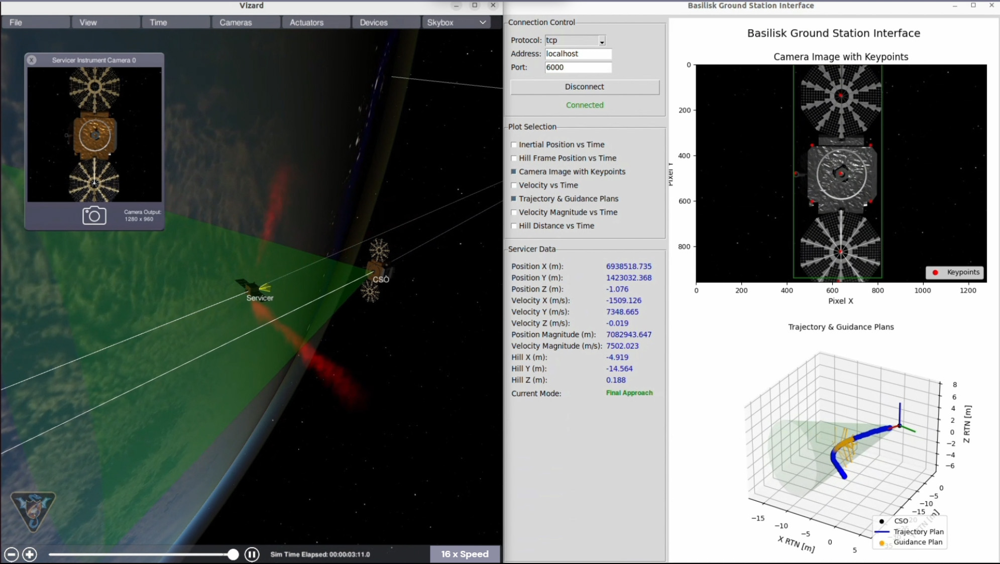
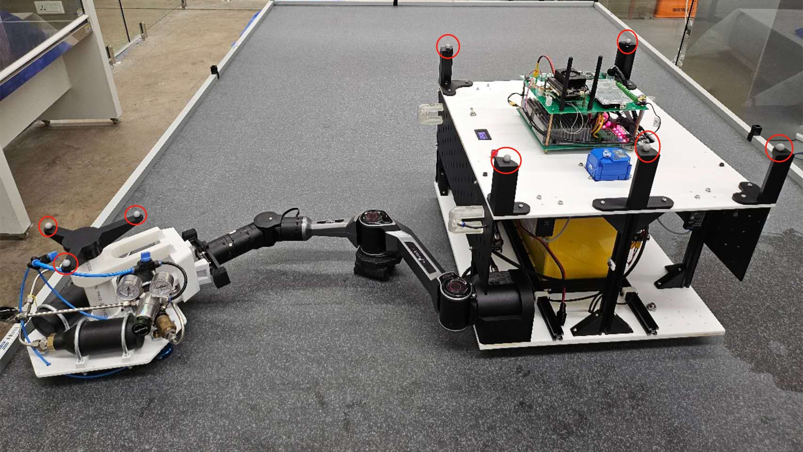
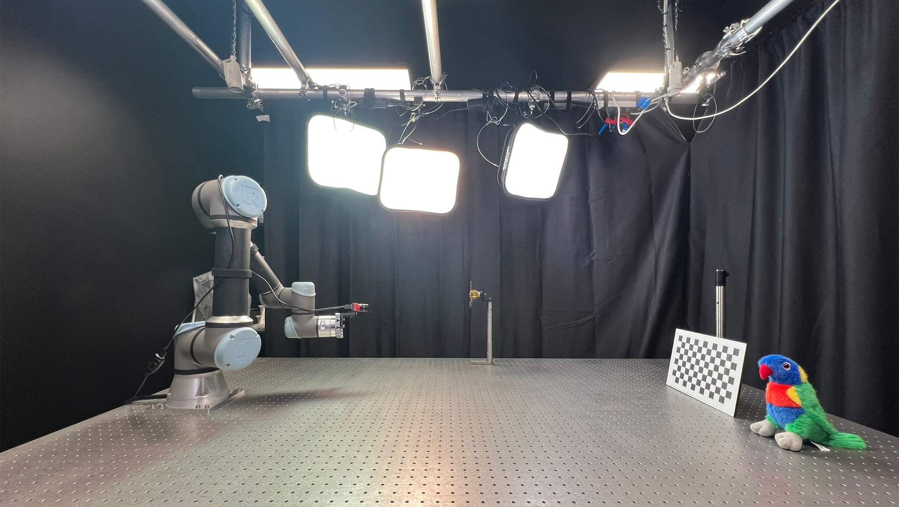

What We Do
Mission Autonomy
We create autonomous systems for safe, reliable close-proximity operations in ISAM missions, including state estimation, guidance, and planning from rendezvous to docking. Our robust algorithms, which include Q-law, convex tracking, and model predictive control, enable safe mission execution under real-world constraints
Advanced Sensing
Our sensing module spans long-range and close-range optical solutions. We optimize camera design, simulate imaging systems, and develop adaptive exposure and high dynamic range processing techniques to improve situational awareness during ISAM.
Perception
We use machine learning and computer vision techniques for satellite detection, feature extraction, and tracking using orbital motion models. The perception stack supports autonomy in uncooperative and uncertain conditions.
Robust Robotic Control
We use intelligent planning and control algorithms to dock with and service satellites. Our methods reduce disturbances on the spacecraft base and ensure constraints are met for safe operation.
Testbed Ecosystem
Software Simulation Testbed (SST)
An integrated simulation environment that models the servicer and client spacecraft, sensor suites, and control algorithms. It supports end-to-end testing and verification across all mission phases using realistic dynamics.
Planar Air-Bearing Testbed (PAT)
A dual-arm robotic platform floating on an air-bearing table, used to validate guidance, control, and rendezvous strategies in 2D. The system includes real-time state estimation and onboard control.
Optics Lab Testbed (OLT)
A laboratory-scale hardware-in-the-loop optical environment for perception algorithm validation using robotic arms, lighting rigs, and scale models of client satellites under various illumination conditions.
Demonstrations
Team
Chief Investigators
Dr Xiaofeng Wu
Dr Donald G. Dansereau

Dr Viorela Ila
Prof Salah Sukkarieh
Prof Stefan Williams
Systems Engineer / Project Manager

Mr Julian Guinane
Postdoctoral Researchers
Dr Tim Bailey
Dr Xianliang Chen
Dr Jasprabhjit Mehami
Dr Minduli Wijayatunga
Dr Nathan Wallace
Dr Zhicheng Xie
Research Associates
Mr Will Thorp
PhD Researchers
Mr Saad Alshammari
Mr Jiashu Wu
Undergraduate Student Researchers
Oscar Ke
Tammy Lee
Katrina Marshall
Yuuichi Tang
Andrian Yasintus
Zefeng Yu
Jay Zhou
Funding and Industry Partner Representatives
Andrew Barton
SmartSat CRC
Lashika Medagoda
Abyss Solutions
Mikhail Asavkin
ANT61
Linh Trinh
ANT61
Julia Mitchell
Space Machines Co
Alex Priest
Space Machines Co
Taofiq Huq
Spiral Blue
International Astronautical Congress 2025
Conference Presentations
| Lead Author | Paper | Session | Date | Time | Room |
|---|---|---|---|---|---|
| Minduli Wijayatunga | Real‑Time Trajectory Optimization and Guidance for the Final Approach Phase of In‑Orbit Servicing Missions | C1.3 Guidance, Navigation and Control (1) | 29 Sept 2025 | 16:00 | C4.8 |
| Jiashu Wu | Design and Experimental Results of a Dual‑Arm Planar Air‑Bearing Platform for ISAM Missions | C2.4 Space Structures Control, Dynamics and Microdynamics | 1 Oct 2025 | 11:05 | C3.4 |
| Jasprabhjit Mehami | Balancing Focus and Defocus: Optimized Camera‑Only Imaging for In‑Orbit Satellite Servicing | D1.2 Technologies that Enable Space Systems | 30 Sept 2025 | 12:05 | C3.5 |
| Julian Guinane | System Design and Hardware‑In‑The‑Loop Testbed Development for an Australian ISAM Demonstrator Mission | D1.4 Cooperative Systems | 2 Oct 2025 | 11:03 | C3.5 |
| Nathan Wallace | An Integrated Framework for Mission Design and Guidance for Autonomous In‑Orbit Servicing Missions | IPB – IAF Astrodynamics Symposium (Interactive Presentations) | – | – | – |
Special Session: Emerging Technologies for Autonomous On‑Orbit Servicing
Time: Thursday 2 Oct 15:00 – 16:10 AEST | Room: C4.4
Join leading minds from industry, academia and policy‑making to explore how advances in robotics, artificial intelligence and computer vision are transforming satellite servicing. This special session aligns technological innovation with practical needs and regulatory realities, helping to bridge the gap between research breakthroughs and real‑world implementation.
Organisers
- Teresa Vidal‑Calleja – Professor & Research Director, Robotics Institute, University of Technology Sydney (UTS)
- Jack Naylor – PhD Candidate, Australian Centre for Robotics, University of Sydney
- Nathan Wallace – Research Fellow, Agriculture & Environment Group, ACFR, University of Sydney
- Minduli Wijayatunga – Adjunct Assistant Professor, Aerospace Engineering, University of Illinois, Urbana-Champaign
- Julian Guinane – Space Systems Engineer, School of Aerospace, Mechanical and Mechatronic Engineering, University of Sydney
- Donald G. Dansereau – Senior Lecturer, School of Aerospace, Mechanical and Mechatronic Engineering, University of Sydney
- Thierry Peynot – Associate Professor, Queensland University of Technology (QUT)
- Miguel Angel Olivares‑Mendez – Associate Professor, University of Luxembourg
Technical Tour: Innovation in Space Technology
Date & Time: Wednesday, 1 October, 14:00 – 17:00
Step into the future of space exploration with the University of Sydney’s Innovation in Space Technology tour. As the birthplace of Australia’s first aerospace and physics schools, the University is leading the charge in revolutionising the global space industry. This immersive experience showcases cutting‑edge research in smart sensing, nanosatellites, autonomous robotics and UAVs—designed to make space more affordable and accessible. The tour concludes with drinks and networking at the Chau Chak Wing Museum, an inspiring end to a journey through the cosmos.
Tour Highlights
- CUAVA – CubeSats & UAVs in Action: Learn how Project Waratah Seed and miniature satellites with UAVs transform space data collection across industries.
- TOLIMAN Space Telescope: Discover how the innovative TOLIMAN telescope uses astrometric techniques to detect celestial bodies with unprecedented precision, offering a low‑cost alternative for space observation and exoplanet discovery.
- Australian Centre for Robotics: Meet the minds behind the Sydney Interplanetary Rover Initiative—a modular rover designed for lunar and Martian missions, highlighting Australia’s leadership in autonomous navigation and robotics.
- Space Systems Engineering Laboratory: Witness demonstrations of advanced control systems for on‑orbit servicing, in‑space assembly and manufacturing, pushing the boundaries of space systems engineering.
Closed‑toe shoes are required for all participants.
Contact
Email us at xiaofeng.wu@sydney.edu.au, minduli@illinois.edu, or julian.guinane@sydney.edu.au
Sydney NSW, Australia